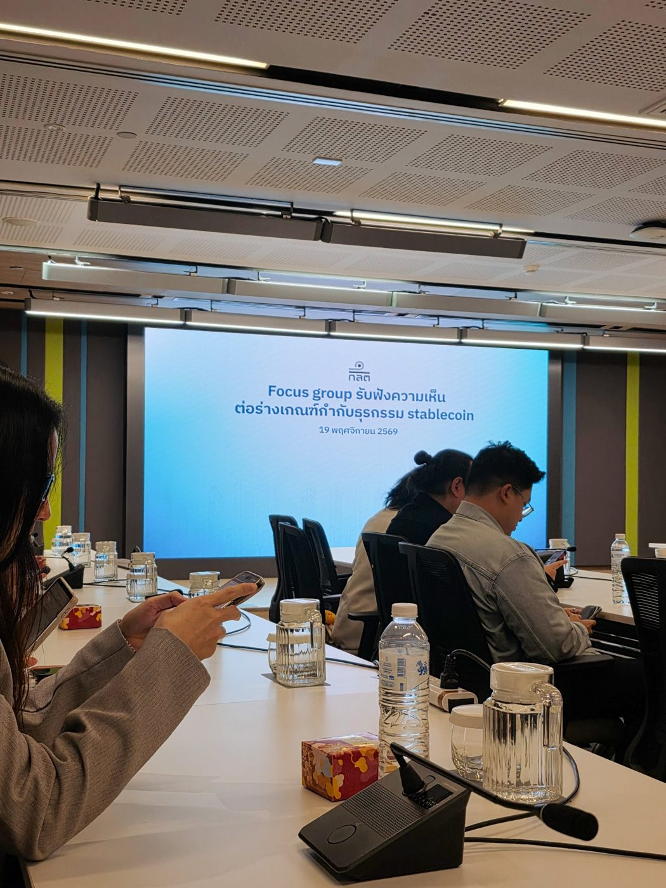

Latest
20 Nov 2026
Photo: siraptn New essayThailand's stablecoin draft: money's rules without money's job
From the 19 Nov focus group. Comments on the draft close 26 Nov.
Recent talks
ทันหุ้นคริปโท EP.60 | ถอดบทเรียนเกือบ 10 ปี ในสายการเงินกับ “จ๊ะเอ๋ย”ทันหุ้น · Facebook Live คุยเรื่องเงินไม่เครียด | EP20: Insight ตลาดคริปโต จากคนที่อยู่ในเกมจริงASLAN WEALTH · YouTube
คุยเรื่องเงินไม่เครียด | EP20: Insight ตลาดคริปโต จากคนที่อยู่ในเกมจริงASLAN WEALTH · YouTube สุมหัวเรื่องบ้านบ้าน EP. 99 "KIREN BBQ วิศวกรรมร้านอาหาร และอุปกรณ์ปิ้งย่างคุณภาพสูง"Seacon Channel · YouTube
สุมหัวเรื่องบ้านบ้าน EP. 99 "KIREN BBQ วิศวกรรมร้านอาหาร และอุปกรณ์ปิ้งย่างคุณภาพสูง"Seacon Channel · YouTube
คุยเรื่องเงินไม่เครียด | EP20: Insight ตลาดคริปโต จากคนที่อยู่ในเกมจริงASLAN WEALTH · YouTubeสุมหัวเรื่องบ้านบ้าน EP. 99 "KIREN BBQ วิศวกรรมร้านอาหาร และอุปกรณ์ปิ้งย่างคุณภาพสูง"Seacon Channel · YouTube